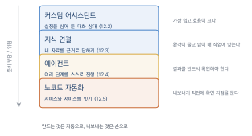
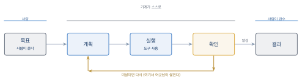

AI 에이전트와 워크플로 자동화
이 장을 마치면
- 여러 도구를 잇는 작업 흐름을 설계할 수 있다.
- 자기 용도에 맞춘 챗봇형 어시스턴트를 만들 수 있다.
- 자기 자료를 인공지능에게 참조시키는 방법을 안다.
- 에이전트가 무엇이며 무엇을 할 수 있는지 설명할 수 있다.
- 코드 없이 반복 작업을 자동화할 수 있다.
여기까지 왔다면 이미지·글·음악·영상 도구를 각각 다룰 수 있을 것이다. 그런데 실제 작업은 이들을 오가며 이루어지고, 그 사이에는 늘 같은 일이 반복된다. 이 장에서는 그 반복을 줄이는 방법을 다룬다. 수업계획서가 권장하는 ’생성형 AI를 활용한 프로토타입·챗봇 개발’에 해당하는 장이며, 프로그래밍 없이 진행한다.
12.1 도구 하나에서 여러 도구로
여기까지 왔다면 이미지·글·음악·영상 도구를 각각 다룰 수 있을 것이다. 그런데 9장과 11장의 프로젝트를 하며 느꼈을 것이다. 도구를 오가는 일 자체가 일이라는 것을.
내 작업 흐름 그려 보기
9장 웹툰 프로젝트를 되짚어 보자. 대략 이런 순서였을 것이다.
대화형 AI 아이디어 벌리기
대화형 AI 컷 구성 짜기
대화형 AI 프롬프트 초안 만들기
이미지 도구 캐릭터 시트 (여러 번)
이미지 도구 컷 생성 (컷마다 여러 번)
편집 도구 색조 통일
편집 도구 말풍선·글자
편집 도구 내보내기
그 사이사이
→ 프롬프트를 손으로 복사·붙여넣기 (수십 번)
→ 캐릭터 설정을 매번 다시 입력
→ 파일 이름 붙이고 폴더에 옮기기마지막 세 줄이 이 장의 표적이다. 같은 것을 반복해서 입력하고 옮기는 일이 실제 작업 시간의 상당 부분을 차지한다.
자동화할 가치가 있는 일
모든 반복을 자동화할 필요는 없다. 기준이 있다.
| 자동화할 가치가 있다 | 손으로 하는 편이 낫다 |
|---|---|
| 같은 설정을 매번 다시 입력 | 한 번만 하는 일 |
| 정해진 형식으로 정리하기 | 판단이 필요한 일 |
| 여러 곳에 같은 것을 올리기 | 결과를 보고 방향을 정하는 일 |
| 파일 이름 바꾸고 옮기기 | 자동화하는 데 더 오래 걸리는 일 |
오른쪽 마지막 줄을 잊지 말자. 자동화를 만드는 데 드는 시간이 그것으로 아끼는 시간보다 크면 안 하는 것이 낫다. 학기 과제 규모에서는 이런 경우가 흔하다.
이 장의 지도
네 단계로 나아간다. 아래로 갈수록 강력하지만 준비가 많이 든다.

1. 커스텀 어시스턴트(12.2절). 설정과 지시를 미리 심어 둔 대화 상대를 만든다. 매번 같은 설명을 다시 하지 않아도 된다. 가장 쓸모 대비 노력이 적고, 이 장에서 가장 중요한 절이다.
2. 지식 연결(12.3절). 자기 자료를 참조하게 만든다. 환각이 줄고 답이 내 작업에 맞게 나온다.
3. 에이전트(12.4절). 스스로 여러 단계를 진행하는 방식이다. 개념을 이해하고 한계를 아는 데 목적을 둔다.
4. 노코드 자동화(12.5절). 서비스와 서비스를 잇는다. 코드 없이 만든다.
프로그래밍은 하지 않는다
이 책의 원칙대로, 이 장에서도 코드를 쓰지 않는다. 위 네 가지 모두 화면에서 클릭하고 문장을 입력하는 것으로 만들 수 있다.
다만 12.5절에서 아주 짧은 데이터 형식(JSON)을 볼 것이다. 읽을 줄만 알면 되고 쓸 필요는 없다.
이 과목의 수업계획서에는 생성형 AI를 활용한 프로토타입 제작이나 챗봇 같은 AI 어시스턴트 개발을 권장한다는 항목이 있다. 12.2절의 커스텀 어시스턴트가 정확히 그 내용이며, 프로그래밍 없이 만들 수 있다.
시작하기 전에
한 가지 태도를 정해 두자. 자동화는 창작을 대신하는 것이 아니라 창작이 아닌 일을 덜어 내는 것이다.
1.4절에서 창작의 다섯 단계를 나누며 의도와 선택이 사람의 몫이라고 했다. 자동화의 대상은 그 사이의 반복 노동이지 판단이 아니다. 이 구분이 흐려지면 12.6절에서 다룰 문제가 생긴다.
12.2 나만의 어시스턴트 만들기
이 절이 12장의 핵심이다. 만드는 데 30분이면 되고, 학기 내내 쓴다.
무엇을 만드는가
커스텀 어시스턴트custom assistant는 지시와 자료를 미리 심어 둔 대화 상대다. 서비스마다 이름이 다르다. GPTs, Projects, Gems 등으로 부르지만 하는 일은 같다.
만들면 무엇이 좋을까. 8.1절에서 설정 문서를 매번 붙여넣으라고 했던 것을 떠올려 보자. 어시스턴트를 만들면 그 붙여넣기가 사라진다. 대화를 새로 열어도 설정이 그대로 있다.
시스템 지시문 쓰기
어시스턴트의 핵심은 시스템 지시문이다. 이것이 4장에서 배운 모든 프롬프트 기법의 집대성이다.
[역할] 너는 무엇을 하는 사람인가
[대상] 누구를 상대하는가
[방식] 어떤 순서로, 어떤 형식으로 답하는가
[제약] 하지 말아야 할 것
[자료] 참조할 설정이나 규칙
[첫 인사] 대화를 시작할 때 무엇을 물을 것인가실제로 써 보자. 8장의 이야기 작업을 돕는 어시스턴트다.
[역할]
너는 짧은 웹툰 시나리오를 함께 쓰는 작가 파트너다.
대신 써 주는 것이 아니라 함께 궁리하는 것이 네 일이다.
[방식]
1. 사용자가 아이디어를 말하면, 먼저 확인 질문을 3개 던진다.
2. 구조는 사용자가 정하게 한다. 네가 먼저 구조를 제안하지 마라.
3. 사용자가 정한 칸을 채울 때는 항상 안을 3개씩 제시한다.
4. 각 단계가 끝나면 멈추고 사용자의 확인을 받는다.
[제약]
- 감정을 이름 붙여 말하지 마라 (슬펐다, 기뻤다). 행동으로 써라.
- 마지막에 교훈이나 정리하는 문장을 넣지 마라.
- 부사를 최소한으로 써라.
- 사용자가 요청하지 않은 부분을 고치지 마라.
[자료]
아래 설정을 항상 참조한다. 설정과 어긋나는 제안은 하지 마라.
(캐릭터 카드와 세계관 설정을 여기에 붙여넣는다)
[첫 인사]
"오늘은 어느 장면을 쓸까요? 아니면 설정부터 손볼까요?"
라고 물으며 시작한다.제약 항목이 이 어시스턴트의 진짜 가치다. 8.6절에서 배운 일곱 징후를 미리 막아 두었기 때문에, 매번 감정을 설명하지 말라고 말할 필요가 없다. 한 번 써 두면 계속 적용된다.
또 다른 예: 프롬프트 도우미
이미지 작업을 돕는 어시스턴트다. 4장과 6장의 내용을 심어 둔다.
[역할]
너는 이미지 생성 프롬프트를 다듬어 주는 도우미다.
[방식]
사용자가 원하는 장면을 한국어로 말하면,
다음 다섯 축을 모두 채운 영어 프롬프트를 만들어 준다.
주제 / 세부 / 스타일 / 구성(구도·시점·조명) / 제약
쉼표로 나열하는 형식으로 쓰고, 중요한 것을 앞에 둔다.
만들어 준 뒤 반드시 다음을 덧붙인다.
- 이 프롬프트에서 내가 임의로 정한 부분 (사용자가 말하지 않은 것)
- 결과가 마음에 안 들 때 가장 먼저 손댈 항목
[제약]
- 실존 작가나 아티스트의 이름을 절대 넣지 마라.
대신 그 화풍의 특징을 항목으로 풀어 써라.
- 부정문(no, without)을 프롬프트 본문에 넣지 마라.
빼야 할 것이 있으면 네거티브 프롬프트로 따로 제시하라.
- 품질 관련 상투어(masterpiece, best quality)를 남발하지 마라.
[스타일 기본값]
아래는 내 작업의 기본 톤이다. 특별한 지시가 없으면 이것을 쓴다.
(자기 톤앤매너 문구를 여기에 붙여넣는다)내가 임의로 정한 부분을 밝히게 한 것이 요령이다. 모델이 알아서 채운 부분을 알려 주므로, 어디를 통제해야 할지 바로 안다.
만드는 순서
- 쓰고 있는 대화형 AI 서비스에서 어시스턴트 만들기 메뉴를 찾는다
- 이름과 설명을 정한다
- 시스템 지시문을 위 구조로 작성한다
- 참조할 파일이 있으면 첨부한다 (12.3절)
- 시험해 본다. 의도대로 안 되면 지시문을 고친다
- 필요하면 공유한다
5번이 실제 작업의 대부분이다. 처음 쓴 지시문이 바로 잘 작동하는 경우는 드물다.
지시문 고치기
시험해 보면 어긋나는 지점이 나온다. 대처는 4.4절의 개선 요청과 같다.
| 증상 | 대처 |
|---|---|
| 지시를 무시한다 | 지시문 앞쪽으로 옮긴다. 짧고 단정하게 |
| 너무 장황하다 | 분량 제한을 명시한다 (3문장 이내) |
| 멈추지 않고 다 해 버린다 | 각 단계 후 멈추고 확인받아라를 강조 |
| 설정을 어긴다 | 자료를 첨부 파일로 옮긴다 (12.3절) |
| 말투가 흔들린다 | 예시 대화를 지시문에 넣는다 |
마지막 줄이 강력하다. 원하는 대화의 예를 한 번 보여 주는 것이 백 마디 지시보다 잘 통한다. 4.4절의 예시 제공 기법이다.
공유하고 서로 써 보기
만든 어시스턴트는 링크로 공유할 수 있는 경우가 많다. 조원끼리 교환해 써 보면 배우는 것이 많다.
만든 사람: ______ 어시스턴트 이름: ____________
1. 무엇을 하는 도구인가 (써 보고 짐작한 것):
____________________
2. 실제 의도와 맞았는가: □ 예 □ 아니오
3. 가장 잘 작동한 지시: ____________________
4. 잘 안 지켜지는 것 같은 지시: ____________________
5. 내 어시스턴트에 가져가고 싶은 것: ____________________어시스턴트를 공개 공유할 때는 지시문에 넣은 자료를 확인하자. 미공개 작업물, 개인 정보, 남의 자료가 들어 있으면 함께 공개된다. 시스템 지시문을 보여 달라고 하면 알려 주는 경우도 있으므로, 감춰야 할 것은 애초에 넣지 않는 편이 안전하다.
12.3 지식을 넣어 주기
3.1절에서 환각이 구조적 성질이라고 했다. 완전히 없앨 수는 없지만 크게 줄이는 방법이 있다. 답의 근거가 될 자료를 함께 주는 것이다.
참고서를 펴 놓게 해 주기
시험을 두 가지 방식으로 볼 수 있다고 하자. 하나는 아무것도 못 보고 기억에만 의존하는 것, 다른 하나는 참고서를 펴 놓고 찾아가며 답하는 것.
언어 모델의 기본 상태는 전자다. 학습할 때 본 것을 흐릿하게 기억하고 있을 뿐이라, 정확하지 않은 것도 그럴듯하게 말한다.
여기에 자료를 붙여 주면 후자가 된다. 이 방식을 검색 증강 생성retrieval-augmented generation, RAG이라고 부른다. 이름은 거창하지만 원리는 단순하다.
- 질문이 들어오면, 붙여 둔 자료에서 관련된 부분을 먼저 찾는다
- 찾은 부분을 질문과 함께 모델에 넣는다
- 모델은 그 내용을 근거로 답한다
핵심은 2번이다. 모델이 기억에서 꺼내는 것이 아니라 눈앞에 놓인 문서를 읽고 답한다. 그래서 환각이 크게 줄고, 답의 출처를 확인할 수도 있다.
실제로 하는 방법
거창한 준비가 필요 없다. 대부분의 서비스가 파일을 첨부하는 것으로 지원한다.
- 대화 중에 파일을 올린다 (한 번짜리)
- 어시스턴트에 파일을 붙여 둔다 (계속 유지)
- 프로젝트 폴더에 자료를 모아 둔다 (서비스에 따라)
두 번째가 12.2절의 어시스턴트와 이어진다. 시스템 지시문에 자료를 통째로 적는 대신 파일로 붙여 두면 지시문이 깔끔해지고 자료도 많이 넣을 수 있다.
무엇을 넣을까
지금까지 만든 것들이 그대로 재료가 된다.
[창작 작업용]
캐릭터 카드 (8.4절)
세계관 설정 문서 (8.2절)
이미 쓴 원고 (문체 참조용)
컷 계획표 (9.3절)
[이미지 작업용]
프롬프트 기록 (4.5절)
변형 실험표
나만의 어휘 목록 (실습 4-6)
톤앤매너 문구 (9.2절)
[프로젝트 관리용]
기획서
일정표
점검 목록 (5.6절, 부록 C)첨부한 프롬프트 기록을 보고, 내가 자주 쓰는 스타일 어휘의
경향을 정리해 줘. 그리고 내가 한 번도 안 써 본 방향을
세 가지 제안해 줘. 기록에 있는 실제 프롬프트를 인용해서 설명해 줘.실제 프롬프트를 인용하라는 지시가 중요하다. 인용을 요구하면 모델이 자료를 실제로 참조하게 되고, 우리도 그 답이 자료에 근거한 것인지 확인할 수 있다.
환각을 더 줄이는 지시
자료를 붙여도 모델은 아는 척을 할 수 있다. 지시로 막는다.
- 첨부한 자료에 없는 내용은 답하지 마라.
- 자료에 없으면 "자료에 없습니다"라고 말하라.
- 답변할 때 근거가 된 부분을 인용하라.
- 추측이 섞였다면 그 부분을 명시하라.이 네 줄을 어시스턴트의 시스템 지시문에 넣어 두면 신뢰도가 크게 오른다.
완전히 막히지는 않는다. 자료에 없는데도 그럴듯한 답을 만드는 경우가 여전히 있다. 사실이 중요한 작업에서는 3.1절의 원칙이 그대로 유효하다. 확인할 수 없는 사실 진술은 그대로 쓰지 않는다.
자료를 잘 만드는 법
넣는 자료가 정리되어 있을수록 답이 좋아진다.
- 제목과 항목을 명확히. 문단만 죽 이어진 글보다 항목으로 나뉜 문서가 낫다
- 한 파일에 한 주제. 여러 주제를 한 파일에 섞으면 엉뚱한 부분을 참조한다
- 최신본만 넣는다. 옛 버전이 함께 있으면 어느 것을 따를지 헷갈린다
- 용어를 통일한다. 같은 인물을 어떤 곳에서는 이름으로, 어떤 곳에서는 별명으로 쓰면 연결이 끊긴다
이 조건들은 사람이 읽기 좋은 문서의 조건과 정확히 같다. 인공지능을 위해 따로 작업할 필요가 없고, 평소에 자료를 잘 정리하면 그대로 쓸모가 된다.
개인 정보에 주의
자료를 올린다는 것은 그 서비스에 자료를 넘긴다는 뜻이다. 5.2절에서 확인한 입력 자료의 학습 이용 조항이 여기서 실제 문제가 된다.
- 남의 개인 정보가 담긴 자료를 올리지 않는다
- 미공개 작업물은 학습 이용 여부를 확인하고 올린다
- 팀 프로젝트라면 팀원의 동의를 받는다
- 학교나 기관의 내부 자료는 규정을 확인한다
설문 응답, 인터뷰 녹취, 참여자 명단처럼 다른 사람의 정보가 담긴 자료는 특히 조심한다. 연구나 프로젝트에서 수집한 자료를 그대로 올리는 것은 동의 범위를 벗어나는 경우가 많다.
12.4 에이전트란 무엇인가
요즘 자주 들리는 말이다. 개념을 정확히 알아 두면 과장된 이야기와 실제로 되는 것을 구분할 수 있다.
단발 응답과 에이전트
지금까지 우리가 쓴 방식은 한 번 묻고 한 번 답받는 것이었다. 여러 번 주고받긴 했지만, 매번 사람이 다음 지시를 내렸다.
에이전트agent는 다르다. 목표를 주면 스스로 여러 단계를 진행한다. 대략 이런 순환을 돈다.
- 계획 – 목표를 이루려면 무엇을 해야 하는지 나눈다
- 실행 – 도구를 써서 한 단계를 수행한다
- 확인 – 결과가 목표에 가까워졌는지 본다
- 반복 – 아니면 다시 계획한다

그림 12.2의 순환이 핵심이다. 사람이 매 단계 지시하지 않아도 된다는 점이 단발 응답과의 결정적 차이다.
도구를 쓴다는 것
에이전트를 가능하게 한 것은 모델이 외부 도구를 호출할 수 있게 된 변화다. 언어 모델은 원래 글만 만들 수 있었는데, 이제는 이런 일을 할 수 있다.
- 웹을 검색해 최신 정보를 가져온다
- 계산을 정확히 한다 (모델은 산수에 약하다)
- 파일을 읽고 쓴다
- 다른 서비스를 호출한다 (이미지 생성 등)
검색이 붙었다는 것이 창작자에게 실질적이다. 3.1절에서 본 환각이 사실 확인이 필요한 작업에서는 크게 줄어든다. 다만 검색 결과 자체가 틀릴 수 있으므로 완전한 해결은 아니다.
창작 분야에서의 쓸모
솔직하게 정리하자. 지금 시점에서 에이전트가 창작 작업에 주는 실질적 이득은 제한적이다.
잘 되는 것
- 자료 조사. 여러 곳을 찾아보고 정리해 준다. 출처가 남으므로 확인할 수 있다
- 긴 문서 다루기. 여러 파일을 오가며 정보를 모은다
- 반복적인 정리. 정해진 형식으로 여러 건을 처리한다
아직 어려운 것
- 미적 판단. 여러 시안 중 좋은 것을 고르는 일
- 긴 창작 과정 전체. 중간에 방향이 어긋나면 끝까지 어긋난다
- 맥락이 필요한 결정. 왜 이 프로젝트를 하는지 아는 것
두 목록의 대비가 1.4절의 다섯 단계와 정확히 겹친다. 에이전트는 구상과 생성을 돕고, 의도와 선택은 여전히 사람의 몫이다.
어긋남이 쌓이는 문제
에이전트의 구조적 약점이 하나 있다. 여러 단계를 거치면서 작은 어긋남이 누적된다는 점이다.
1단계에서 약간 잘못 이해하면, 2단계는 그 잘못된 이해 위에서 진행된다. 3단계에서는 더 멀어진다. 사람이 중간에 보지 않으면 마지막에 가서야 알게 된다.
그래서 에이전트에게 긴 작업을 통째로 맡기는 것은 위험하다. 특히 결과물이 공개될 작업이라면 더욱 그렇다. 중간에 확인 지점을 두는 것이 12.6절의 주제다.
학기 과제에서 써 볼 만한 것
현실적으로 쓸 수 있는 범위다.
- 자료 조사 맡기기. 9.2절의 경쟁 콘텐츠 조사, 사례 분석
- 내 자료 정리시키기. 프롬프트 기록에서 경향 뽑아내기 (12.3절)
- 반복 확인. 완성물이 점검 목록을 통과하는지 항목별로 확인시키기
세 번째가 뜻밖에 유용하다. 5.6절이나 11.7절의 점검 목록을 주고 자기 작업을 검사하게 하면, 놓친 항목을 찾아 준다.
첨부한 점검 목록의 각 항목에 대해, 내가 첨부한 작업물이
통과하는지 하나씩 확인해 줘.
각 항목마다
- 통과 / 미통과 / 확인 불가 중 하나로 판정
- 판정의 근거
- 미통과라면 어떻게 고칠지
를 표로 정리해 줘.
네가 직접 확인할 수 없는 항목(예: 약관 확인 여부)은
'확인 불가'로 표시하고 내가 해야 할 일을 알려 줘.마지막 문단이 중요하다. 기계가 확인할 수 없는 것을 구분하게 해 두면, 사람이 해야 할 일이 명확해진다.
과장을 구분하기
에이전트에 대한 이야기에는 과장이 많다. 판단 기준을 하나 제시한다.
알아서 다 해 준다는 말이 나오면, 무엇을 기준으로 잘했는지 판단하는가를 물어보자. 그 답이 없으면 대개 과장이다.
2.1절에서 학습의 세 요소 중 성능을 무엇으로 재는지가 결정적이라고 했다. 에이전트도 같다. 성공을 판정할 기준이 명확한 일(계산, 검색, 형식 변환)은 잘하고, 기준이 사람의 판단에 달린 일(좋은 그림, 설득력 있는 글)은 여전히 사람이 봐야 한다.
12.5 노코드로 워크플로 잇기
서비스와 서비스를 잇는 단계다. 코드를 쓰지 않고 화면에서 만든다.
어떻게 이어지는가
원리는 단순하다. 어떤 일이 생기면 다른 일을 하게 만드는 것이다.
[언제] 구글 폼에 새 응답이 들어오면
↓
[무엇을 한다] 그 내용을 정리해서
↓
[어디에] 스프레드시트에 한 줄 추가하고
↓
[또 무엇을] 나에게 알림을 보낸다언제에 해당하는 것을 트리거trigger, 무엇을 한다에 해당하는 것을 액션action이라고 부른다. 이 둘을 이어 붙이는 것이 전부다.
도구
가장 널리 쓰인다. 연결할 수 있는 서비스가 많다. 무료 플랜은 월 실행 횟수와 단계 수(대개 2단계)에 제한이 있다.
Zapier보다 분기와 반복 설계가 자유롭다. 화면이 흐름도 형태라 구조를 보기 좋다. 무료 플랜의 작업 수 한도가 비교적 넉넉하다.
이 밖에 각 서비스가 자체 자동화 기능을 제공하기도 한다. 노션, 구글 워크스페이스, 디스코드 등이 그렇다. 한 서비스 안에서 끝나는 일이라면 그쪽이 더 간단하다.
학기 과제에서 만들 만한 것
거창하지 않아도 된다. 실제로 쓸모 있는 작은 것들이다.
1. 아이디어 수집함. 폼으로 아이디어를 받아 스프레드시트에 쌓고, 일정 개수가 모이면 알림을 받는다. 팀 작업에서 유용하다.
2. 작업 기록 자동화. 특정 폴더에 파일이 추가되면 목록에 자동으로 기록한다. 4.5절의 기록을 손으로 안 써도 된다.
3. 게시 예약과 배포. 완성한 콘텐츠를 정해진 시각에 여러 곳에 올린다.
4. 피드백 모으기. 폼으로 받은 반응을 자동 정리하고 요약한다. 9.7절의 반응 기록에 쓸 수 있다.
이 중 2번이 학기 중에 가장 효용이 크다. 13장에서 포트폴리오를 만들 때 기록이 남아 있느냐가 결정적인데, 손으로 쓰면 대개 빠뜨리기 때문이다.
만들어 보기
가장 간단한 것부터 해 보자.
1. 자동화 도구에 가입하고 새 흐름을 만든다
2. 트리거 선택: "구글 드라이브 특정 폴더에 새 파일"
3. 액션 선택: "구글 시트에 행 추가"
4. 어떤 정보를 넣을지 연결한다
파일 이름 → A열
생성 시각 → B열
파일 링크 → C열
5. 시험 실행한다
6. 켜 둔다4번의 연결이 이 작업의 전부다. 앞 단계에서 나온 정보를 뒤 단계의 어느 칸에 넣을지 화면에서 끌어다 놓는다.
데이터 형식 잠깐
자동화 도구를 쓰다 보면 이런 것을 보게 된다.
{
"file_name": "cut03_v2.png",
"created_at": "2026-09-20T14:32:00",
"folder": "02_컷생성",
"size_kb": 1840
}제이슨JSON이라는 형식이다. 이름과 값을 짝지어 놓은 목록일 뿐이니 겁낼 것 없다. 읽을 줄만 알면 되고, 직접 쓸 일은 거의 없다.
이런 화면을 만났을 때 하는 일은 하나다. 내가 원하는 정보의 이름을 찾아서 다음 단계에 연결한다. 위 예에서 파일 이름을 쓰고 싶으면 file_name을 고르면 된다.
무료 한도 안에서
무료 플랜의 제약을 알고 설계한다.
- 단계 수 제한. 대개 2–3단계까지. 복잡한 흐름은 나눠서 만든다
- 실행 횟수 제한. 월 100회 정도. 자주 일어나는 트리거는 피한다
- 실행 주기. 무료는 즉시가 아니라 15분마다 확인하는 식일 수 있다
- 연결 가능한 서비스 제한. 일부 서비스는 유료에서만 지원된다
실행 횟수를 다 쓰면 조용히 멈춘다. 자동화가 돌고 있다고 믿었는데 실은 며칠째 멈춰 있는 경우가 생긴다. 중요한 흐름이라면 정상 작동을 확인하는 방법을 함께 마련해 두자.
만들지 말아야 할 것
12.1절의 기준을 다시 적용한다.
- 한 학기에 몇 번 안 하는 일. 만드는 시간이 더 든다
- 매번 판단이 필요한 일. 자동화의 대상이 아니다
- 틀리면 큰일 나는 일. 자동 게시, 자동 발송은 특히 위험하다
세 번째가 12.6절로 이어진다.
12.6 자동화의 한계와 검수
이 장을 마무리하는 절이자, 어쩌면 이 장에서 가장 중요한 절이다.
자동화가 실패하는 곳
자동화는 판단이 필요한 지점에서 실패한다. 그리고 창작 작업에는 그런 지점이 많다.
| 판단 | 왜 어려운가 |
|---|---|
| 이 결과가 좋은가 | 기준이 사람에게 있다 (1.4절) |
| 이것을 내보내도 되는가 | 맥락과 관계를 알아야 한다 |
| 이 표현이 문제될까 | 5장의 판단은 상황에 따라 다르다 |
| 지금이 적절한 때인가 | 바깥 사정을 모른다 |
| 이 사람에게 이렇게 말해도 되는가 | 상대를 모른다 |
자동으로 내보내는 것의 위험
가장 조심할 것은 사람의 확인 없이 바깥으로 나가는 자동화다.
실제로 벌어질 수 있는 일들이다.
- 생성된 이미지에 이상한 요소가 있는 채로 자동 게시된다
- 편향된 결과가 그대로 홍보물에 실린다 (5.5절)
- 환각이 섞인 정보가 사실처럼 배포된다 (3.1절)
- 저작권 문제가 있는 결과물이 공개된다 (5장)
- 부적절한 시점에 자동 발송된다 (사고나 애도 상황 등)
마지막 항목이 실제 기업에서도 반복되는 사고다. 예약해 둔 홍보 게시물이 하필 사건 사고 당일에 발행되어 문제가 되는 경우다. 자동화는 바깥 상황을 모른다.
확인 지점을 설계에 넣는다
해법은 자동화를 포기하는 것이 아니라 중간에 사람이 보는 자리를 만드는 것이다.
[자동] 폼으로 요청 접수
[자동] 프롬프트 생성
[자동] 이미지 생성
[자동] 결과를 검토용 폴더에 저장 + 나에게 알림
────────── 여기서 멈춘다 ──────────
[사람] 결과 확인 → 승인 또는 거부
[자동] 승인된 것만 게시자동으로 만들되 자동으로 내보내지 않는다. 이 한 줄이 대부분의 사고를 막는다.
확인 지점은 되돌릴 수 없는 일 직전에 둔다. 게시, 발송, 결제, 삭제가 그런 일이다. 만드는 것은 다시 하면 되지만 내보낸 것은 되돌릴 수 없다.
무엇을 확인할 것인가
확인 지점을 만들었다면 무엇을 볼지 정해 두어야 한다. 부록 C의 체크리스트가 그 목록이다.
□ 의도한 내용이 맞는가
□ 사실 오류가 없는가 (환각 확인)
□ 이상한 요소가 섞이지 않았는가
□ 등장 인물 구성에 치우침이 없는가
□ 저작권·초상권 문제가 없는가
□ 지금 내보내기에 적절한 시점인가
□ AI 사용 표기가 되어 있는가여섯 번째 항목은 자동화가 절대 확인할 수 없는 것이다. 사람만 할 수 있는 확인을 목록에 남겨 두는 것이 이 검수의 요점이다.
책임은 자동화되지 않는다
마지막으로 이 장 전체의 결론이다.
작업을 자동화하면 시간이 줄고 실수가 줄어든다. 그러나 결과에 대한 책임은 조금도 줄지 않는다. 자동으로 만들어졌든 손으로 만들어졌든, 내 이름으로 나간 것은 내 것이다.
기계가 만들었다는 것은 변명이 되지 못한다. 그 기계를 그렇게 설정한 것이 나이기 때문이다.
5.5절에서 만든 것이 기계라도 발표하는 사람은 나라고 했다. 자동화에서는 이 말이 더 무거워진다. 사람이 매번 보지 않는 만큼, 설계 단계에서 미리 생각해 둔 것만이 지켜지기 때문이다.
그래서 어디까지
학기 과제 수준에서 권하는 선은 이렇다.
- 어시스턴트는 적극적으로. 12.2절은 위험이 없고 효용이 크다
- 지식 연결도 적극적으로. 12.3절은 오히려 정확도를 높인다
- 에이전트는 조사와 점검에. 12.4절은 결과를 반드시 확인한다
- 노코드 자동화는 내부용으로. 12.5절은 기록·정리에 쓰고 게시는 손으로
마지막 줄이 이 장의 실천적 결론이다. 만드는 것은 자동으로, 내보내는 것은 손으로.
13주차 과제는 나만의 창작 도우미 만들기다. 수업계획서가 권장하는 AI 어시스턴트 개발에 해당한다.
실습 12-1. 내 작업 흐름 그리기
9장이나 11장 프로젝트를 되짚어 12.1절처럼 자기 작업 경로를 적는다.
사용한 도구 수: ______개
도구를 오간 횟수(대략): ______회
반복해서 입력한 것
1. ____________________ (약 ___회)
2. ____________________ (약 ___회)
3. ____________________ (약 ___회)
이 중 자동화할 가치가 있는 것: ____________
이유: ____________________
자동화하지 않을 것: ____________
이유: ____________________실습 12-2. 어시스턴트 만들기 (13주차 과제)
12.2절의 구조로 자기 작업에 맞는 어시스턴트를 만든다. 주제는 자유롭게 정하되, 다음 중 하나를 권한다.
- 내 캐릭터 설정을 기억하는 시나리오 파트너
- 내 톤앤매너를 지키는 이미지 프롬프트 도우미
- 내 작업물을 점검 목록으로 검사해 주는 검수자
- 학과·동아리 홍보 문구를 쓰는 도우미
이름: ____________________
한 줄 설명: ____________________
[역할] ____________________
[방식] ____________________
[제약] (최소 3개)
1. ____________________
2. ____________________
3. ____________________
[자료] 첨부할 파일: ____________________
[첫 인사] ____________________제약을 최소 세 개 넣는 것이 조건이다. 8.6절의 일곱 징후나 5장의 원칙에서 가져오면 좋다.
실습 12-3. 어시스턴트 다듬기
만든 어시스턴트를 최소 다섯 번 시험하고 지시문을 고친다.
시험 1 잘 안 된 것: ____________ 고친 지시: ____________
시험 2 잘 안 된 것: ____________ 고친 지시: ____________
시험 3 잘 안 된 것: ____________ 고친 지시: ____________
시험 4 잘 안 된 것: ____________ 고친 지시: ____________
시험 5 잘 안 된 것: ____________ 고친 지시: ____________
가장 효과가 컸던 수정: ____________________
끝까지 안 지켜진 지시: ____________________마지막 칸도 결과다. 지시로 통제되지 않는 것이 무엇인지 아는 것이 이 실습의 목적 중 하나다.
실습 12-4. 지식 붙이기
12.3절의 방식으로 자기 자료를 어시스턴트에 붙인다. 그리고 자료를 붙이기 전후의 답을 비교한다.
붙인 자료: ____________________
같은 질문: ____________________
붙이기 전 답: ____________________
붙인 후 답: ____________________
달라진 점: ____________________
환각 억제 지시를 넣었을 때 추가로 달라진 점: ____________실습 12-5. 어시스턴트 상호 평가
조원끼리 어시스턴트를 교환해 써 보고 12.2절의 평가 양식을 채운다. 특히 다음을 확인한다.
- 만든 사람의 의도가 써 보는 것만으로 파악되는가
- 어떤 지시가 잘 작동하고 어떤 것이 무시되는가
- 내 어시스턴트에 가져갈 것이 있는가
실습 12-6. 에이전트로 점검받기
12.4절의 점검 프롬프트로 자기 작업물을 검사시킨다. 점검 목록은 5.6절이나 부록 C를 쓴다.
AI가 미통과로 판정한 항목: ____________________
내가 보기에 맞는 판정인가: □ 예 □ 아니오
AI가 통과로 판정했지만 실제로는 문제가 있던 항목:
____________________
AI가 '확인 불가'로 표시한 항목: ____________________
그중 내가 반드시 직접 해야 할 것: ____________________세 번째 칸이 중요하다. 기계가 확인할 수 없는 것을 아는 것이 12.6절의 핵심이다.
실습 12-7. 작은 자동화 만들기
12.5절의 작업 기록 자동화를 실제로 만든다. 무료 한도 안에서 진행한다.
트리거: ____________________
액션: ____________________
만드는 데 걸린 시간: ______분
이것으로 아낄 시간(한 학기 추정): ______분
만들 가치가 있었는가: □ 예 □ 아니오
아니라면 왜: ____________________아니오라고 답해도 좋은 실습이다. 12.1절의 기준을 실제로 적용해 보는 것이 목적이다.
실습 12-8. 확인 지점 설계
자기 프로젝트에서 자동화할 만한 흐름을 하나 상상하고, 12.6절처럼 확인 지점을 넣어 설계한다.
[자동] ____________________
[자동] ____________________
────── 확인 지점 ──────
[사람] 무엇을 확인하는가: ____________________
확인해야 하는 이유: ____________________
[자동] ____________________
이 확인 지점을 없앤다면 생길 수 있는 사고:
____________________12장 요약
- 실제 작업 시간의 상당 부분은 같은 것을 반복 입력하고 파일을 옮기는 데 쓰인다. 자동화의 표적은 창작이 아니라 이 반복 노동이다.
- 자동화할 가치가 있는지는 반복 여부와 판단 필요 여부로 가른다. 만드는 시간이 아끼는 시간보다 크면 하지 않는 것이 낫다.
- 커스텀 어시스턴트custom assistant는 지시와 자료를 미리 심어 둔 대화 상대다. 만드는 데 30분이면 되고 효용이 가장 크다. 8장의 설정 문서 붙여넣기가 사라진다.
- 시스템 지시문의 구조는 역할·대상·방식·제약·자료·첫 인사다. 이 중 제약 항목이 진짜 가치다. 8.6절의 일곱 징후를 미리 막아 두면 매번 말할 필요가 없다.
- 지시문은 한 번에 완성되지 않는다. 시험하고 고치는 것이 작업의 대부분이며, 지시가 안 지켜질 때는 원하는 대화의 예를 보여 주는 것이 백 마디 지시보다 낫다.
- 어시스턴트를 공유할 때는 지시문에 넣은 자료가 함께 공개될 수 있다. 감춰야 할 것은 애초에 넣지 않는다.
- 검색 증강 생성RAG은 시험 볼 때 참고서를 펴 놓게 해 주는 것이다. 모델이 기억에서 꺼내는 대신 눈앞의 문서를 읽고 답하므로 환각이 크게 준다.
- 넣을 자료는 이미 만들어 둔 것들이다. 캐릭터 카드, 설정 문서, 프롬프트 기록, 톤앤매너 문구. 사람이 읽기 좋은 문서의 조건이 그대로 좋은 자료의 조건이다.
- 환각 억제 지시 네 줄(자료에 없으면 없다고 하라, 근거를 인용하라 등)을 넣으면 신뢰도가 크게 오른다. 다만 완전히 막히지는 않는다.
- 자료를 올리는 것은 서비스에 자료를 넘기는 일이다. 남의 개인 정보가 담긴 자료는 특히 조심한다.
- 에이전트agent는 목표를 주면 계획–실행–확인–반복을 스스로 돈다. 도구 호출이 붙어 검색·계산·파일 작업이 가능해졌다.
- 에이전트가 잘하는 것은 자료 조사·긴 문서 다루기·반복 정리이고, 못하는 것은 미적 판단·긴 창작 전체·맥락이 필요한 결정이다. 1.4절의 다섯 단계와 정확히 겹친다.
- 구조적 약점은 어긋남이 누적된다는 것이다. 1단계의 작은 오해가 마지막까지 간다. 긴 작업을 통째로 맡기지 않는다.
- 과장을 구분하는 기준: 알아서 다 해 준다는 말이 나오면 무엇을 기준으로 잘했는지 판단하는가를 묻는다. 답이 없으면 과장이다.
- 노코드 자동화는 트리거(언제)와 액션(무엇을)을 잇는 것이다. 학기 과제에서 가장 효용이 큰 것은 작업 기록 자동화다. 기록이 남아 있느냐가 13장 포트폴리오를 좌우한다.
- 자동화가 실패하는 곳은 판단이 필요한 지점이다. 특히 사람의 확인 없이 바깥으로 나가는 자동화가 위험하다. 자동화는 바깥 상황을 모른다.
- 해법은 되돌릴 수 없는 일 직전에 확인 지점을 두는 것이다. 만드는 것은 다시 하면 되지만 내보낸 것은 되돌릴 수 없다.
- 책임은 자동화되지 않는다. 기계가 만들었다는 것은 변명이 되지 못한다. 그 기계를 그렇게 설정한 것이 나이기 때문이다.
- 실천적 결론 한 줄: 만드는 것은 자동으로, 내보내는 것은 손으로.
12장 연습문제
- ★ 자동화할 가치가 있는 일과 손으로 하는 편이 나은 일을 각각 두 가지씩 쓰시오.
- ★ 시스템 지시문의 여섯 구성 요소를 나열하고, 그중 제약 항목이 왜 중요한지 8장의 내용과 연결해 설명하시오.
- ★ 검색 증강 생성RAG을 비유로 설명하고, 이것이 환각을 줄이는 이유를 3.1절의 개념으로 서술하시오.
- ★★ 단발 응답과 에이전트agent의 차이를 설명하고, 에이전트가 도는 네 단계 순환을 쓰시오.
- ★★ 에이전트에게 긴 작업을 통째로 맡기는 것이 위험한 이유를 어긋남의 누적이라는 개념으로 설명하시오.
- ★★ 다음 자동화 흐름에서 확인 지점을 어디에 두어야 하는지 답하고, 그 이유를 쓰시오.
폼 접수 → 프롬프트 생성 → 이미지 생성 → SNS 자동 게시 - ★★ 어시스턴트를 공개 공유할 때 확인해야 할 것을 쓰고, 그 이유를 설명하시오.
- ★★★ 실습 12-3에서 끝까지 지켜지지 않은 지시가 있었다면 그것이 무엇이며 왜 통제되지 않았는지 분석하시오. 3장의 언어 모델 원리와 연결할 것.
- ★★★ 알아서 다 해 준다고 홍보하는 AI 도구를 하나 찾아, 12.4절의 기준으로 그 주장을 검증하시오. 검증에는 (1) 그 도구가 성공을 무엇으로 판정하는지, (2) 사람이 확인해야 할 지점이 어디인지가 포함되어야 한다.
- ★★★ 책임은 자동화되지 않는다는 말의 의미를 자기 작업 사례로 설명하시오. 답에는 (1) 자동화로 만든 결과물에서 문제가 생길 수 있는 지점, (2) 설계 단계에서 미리 넣어야 할 안전장치, (3) 5.5절의 발표하는 사람은 나와의 관계가 포함되어야 한다.